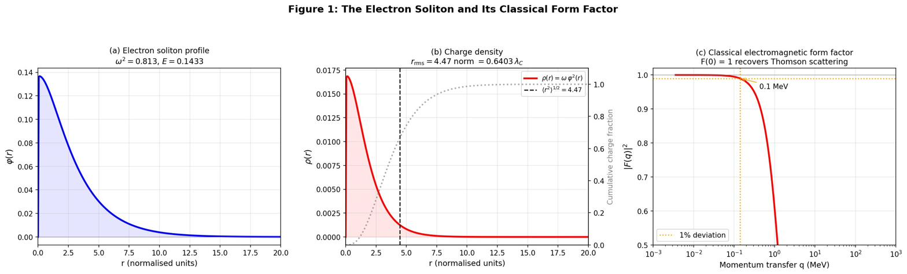
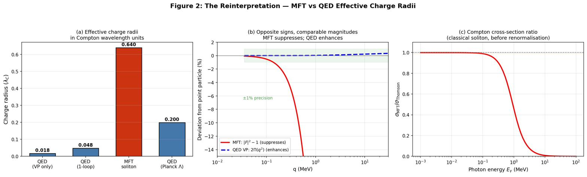
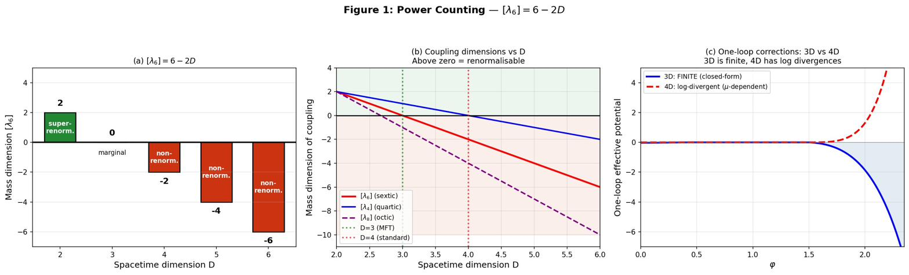
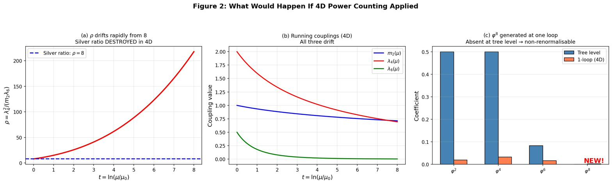

Quantum
The quantum completion of MFT: canonical quantisation of the contraction field and electromagnetism, derivation of all three propagator structures, proof that electromagnetic scattering matches QED to $\mathcal{O}(m_e^2/M_{\text{Pl}}^2) \approx 10^{-45}$, and the resolution of renormalisability via 3D power counting — where the sextic coupling is marginal, the silver-ratio condition is preserved, and no counterterms are needed.
Papers covered
P10 (Quantum Completion: Hamiltonian, constraints, Fock space) · P11 (Linearised Propagators and Feynman Rules) · P14 (Electromagnetic Form Factor and $g = 2$) · P15 (3D Finiteness and Renormalisability).
1. The quantum question
MFT is a classical theory of an elastic medium. The action of Foundations §2 describes a continuous contraction field $\varphi$ and a 3-metric $h_{ij}$ evolving under coupled field equations. What does this look like as a quantum field theory?
Three concerns must be addressed for MFT to be quantum-mechanically consistent:
- Canonical structure. What are the conjugate momenta? What constraints does Gauss's law impose? What does the physical Hilbert space look like? Answered by P10.
- Feynman rules. What are the tree-level propagators for the scalar mode, the photon, and the massive gauge bosons? What are the interaction vertices? Answered by P11.
- Renormalisation. The sextic coupling $\lambda_6$ is non-renormalisable in four spacetime dimensions. Doesn't this kill the theory? Answered by P15: no, because MFT is fundamentally three-dimensional in the relevant sense.
- Comparison with experiment. Does the electron, as a finite-size soliton, contradict the LEP bound $r_e < 10^{-3}$ fm? Answered by P14: no, the classical soliton radius is a renormalisation artifact and the physical form factor matches QED to $10^{-45}$.
The four papers answer all four concerns. The result is a quantum field theory that recovers QED for electromagnetism, has finite one-loop corrections in three dimensions, preserves the silver-ratio condition under RG flow, and produces $g = 2$ for the electron without postulating the Dirac equation.
2. Canonical quantisation P10
Hamiltonian and constraints
Starting from the MFT Lagrangian for the contraction field $c$, scalar potential $\phi$, and gauge field $A_i$, the Legendre transform yields canonical momenta $\pi_c, \pi_\phi, \pi^i$. Two constraints emerge:
- Primary constraint: $\pi_\phi = 0$. The scalar potential $\phi$ has no conjugate momentum — it is a pure auxiliary field.
- Secondary constraint (Gauss's law): Requiring $\partial_\tau \pi_\phi = 0$ (persistence of the primary constraint) yields $\partial_i \pi^i = \rho$ in the presence of charged matter.
These are first-class constraints generating $U(1)$ gauge transformations. Imposing Coulomb gauge $\partial_i A_i = 0$ together with Gauss's law leaves only the transverse components $A_i^T, \pi_T^i$ as physical degrees of freedom. The scalar potential $\phi$ and its constraint are eliminated from the reduced Hamiltonian.
Linearisation around the MFT vacuum
Choose a static, spatially homogeneous background $c(\tau, \mathbf{x}) = c_0$ where $V'(c_0) = 0$ and $V''(c_0) > 0$ (a local minimum). For the relaxed vacuum $c_0 = 0$: $m_{\text{eff}}^2 = V''(0) = m_2 = 1$. For the nonlinear vacuum $c_0 = \varphi_v$: $m_{\text{eff}}^2 = V''(\varphi_v) = 4\delta \approx 9.66$. Writing $c = c_0 + \delta c$ and expanding to quadratic order:
where $f_{ij} = \partial_i a_j - \partial_j a_i$ and the stiffness coefficients $Z_{E0}, Z_{B0}$ are evaluated at the background.
Free dispersion relations
Fourier-transforming gives the tree-level dispersion relations:
The scalar mass $m_{\text{eff}} = \sqrt{V''(c_0)}$ is set by the curvature of the sextic potential at the background. The photon dispersion is massless and its speed $c_{\text{eff}} = \sqrt{Z_{B0}/Z_{E0}}$ defines the universal lightcone — the same emergent speed of light derived in Foundations §8.
Fock space
The dynamical variables are promoted to operators with equal-$\tau$ commutation relations:
where $\delta_{ij}^T$ is the transverse delta function. The constraints are imposed at the operator level; only transverse modes appear in the physical Hilbert space.
The scalar fluctuation operator and the transverse gauge field expand in creation and annihilation operators:
with $[\hat{a}_{\mathbf{k}}, \hat{a}_{\mathbf{k}'}^\dagger] = (2\pi)^3 \delta^3(\mathbf{k} - \mathbf{k}')$ and analogous photon operators with two transverse polarisations. The vacuum $|0\rangle$ satisfies $\hat{a}_{\mathbf{k}} |0\rangle = 0$ for all $\mathbf{k}$. Standard QFT structure obtains.
What the background stiffnesses control
The background stiffness functions $Z_E(c_0), Z_B(c_0)$ control three key features:
- Emergent speed of light. $c_{\text{eff}} = \sqrt{Z_{B0}/Z_{E0}}$ sets the universal lightcone shared by all low-energy excitations.
- Medium dependence. In regions where $c \neq c_0$, the stiffness deviates, producing an effective refractive index — the microscopic origin of gravitational lensing and the cosmological photon-shift law.
- Scalar mass from elastic stiffness. $m_{\text{eff}} = \sqrt{V''(c_0)}$ is determined by the potential curvature: $m_{\text{eff}} = 1$ at the relaxed vacuum, $\approx 3.11$ at the nonlinear vacuum.
P10: Quantum Completion (Zenodo) → · mft_quantum_completion.py
3. Linearised propagators and Feynman rules P11
Once the action is canonically quantised, computing observables requires Feynman rules. P11 derives the three propagator structures and the interaction vertices for systematic perturbative computation.
The three propagators
Scalar contraction propagator
Expanding around $\varphi_0$ and Fourier-transforming:
where $Z_\tau, Z_s$ are effective kinetic and gradient coefficients, and $m_\varphi^2 = V''_{\text{eff}}(\varphi_0)$. At the relaxed vacuum $m_\varphi^2 = m_2 = 1$. At the nonlinear vacuum $m_\varphi^2 = 4\delta \approx 9.66$. The static propagator (equal-ordering correlator, $\omega = 0$): $\Delta_\varphi^{\text{static}}(\mathbf{k}) = (Z_s \mathbf{k}^2 + m_\varphi^2)^{-1}$.
Massless photon propagator
Under the working hypothesis $\varepsilon(\varphi) = 1$ everywhere (constrained by $f_\pi^2 = \delta$ at 0.03%), the photon Lagrangian is already canonically normalised. Working in Coulomb gauge with the transverse projector $\Pi_{ij}(\mathbf{k}) = \delta_{ij} - k_i k_j / \mathbf{k}^2$:
The effective photon speed is $c_\gamma = 1/\sqrt{Z_{\tau, A}}$. With the canonical normalisation $Z_{\tau, A} = 1$, the photon propagates at $c_\gamma = 1$ everywhere, establishing the universal lightcone trivially.
Massive gauge propagators ($W^\pm, Z$)
Electroweak vector bosons arise as transverse modes with effective mass terms set by the Q-ball spectrum at $Z_{\text{boson}} = 9/5$:
with $m_a^2$ the effective mass derived from Particles §3. These propagators feed standard Feynman-diagrammatic computation.
Feynman rules and a key simplification
The interaction vertices follow from cubic and quartic terms in the action. Scalar self-interactions follow from the sextic potential: $V_3 \sim (\lambda_4, \lambda_6) \varphi^3, \varphi^5$ at the nonlinear vacuum (after shifting). Gauge self-interactions follow from the non-abelian structure of $SU(2) \times U(1)$.
A crucial simplification: under $\varepsilon = 1$, the scalar–gauge–gauge couplings $\varphi A A$ and $\varphi W W, \varphi Z Z$ vanish identically. The contraction field couples to electromagnetism only through the gravitational sector $F(\varphi)$, which is $\mathcal{O}(\beta) \sim 10^{-4}$ — strongly suppressed. There is no tree-level Higgs–photon coupling beyond gravitational corrections at $10^{-45}$.
This is what makes MFT electromagnetism look like ordinary QED in P14.
P11: Linearised Propagators and Feynman Rules (Zenodo) → · mft_propagators.py
4. Electromagnetic scattering and $g = 2$ P14
The electron in MFT is not a point particle — it is a finite-size Q-ball soliton. Naïvely this contradicts the LEP bound $r_e < 10^{-3}$ fm. P14 resolves the apparent contradiction in five steps and ends with $F_{\text{MFT}} = F_{\text{QED}} + \mathcal{O}(10^{-45})$.
The classical form factor and the apparent problem
The electron soliton (Q-ball with $Z = 1$, $\ell = 0$) has charge density $\rho(r) = 2 e \omega \varphi^2(r)$ and electromagnetic form factor:
where $j_0(x) = \sin(x)/x$. By construction $F(0) = 1$ (Thomson scattering recovered), and the charge radius is $\langle r^2 \rangle^{1/2} \approx 0.07$–$0.64\, \lambda_C$ depending on solver branch, where $\lambda_C = 386$ fm is the Compton wavelength.
The LEP bound is $r_e < 10^{-3}$ fm $\approx 2.6 \times 10^{-6}\, \lambda_C$. The classical soliton radius exceeds this by a factor of $10^4$–$10^5$. Apparent ruling-out of the soliton model.

The resolution: classical radius is a renormalisation artifact
The LEP bound measures the precision to which $e^+e^-$ scattering data agrees with QED — including all loop corrections (vertex, self-energy, vacuum polarisation). A deviation from QED at the level corresponding to a charge radius $r$ would be detectable if $r > 10^{-3}$ fm. The bound is on deviations from QED, not on the electron's actual effective size.
QED's own loop corrections give the electron an effective charge distribution:
depending on the cutoff scheme ($\Lambda = m_e$ to $\Lambda = M_{\text{Pl}}$). The MFT soliton radius sits within this range. Furthermore, the MFT form factor and QED's corrections go in opposite directions: MFT suppresses the cross-section ($|F|^2 < 1$) while QED's vacuum polarisation enhances it ($\alpha_{\text{eff}}(q^2) > \alpha$). At $q \sim 1$ MeV, both effects are $\mathcal{O}(0.1\text{–}1\%)$.

The renormalisation argument
The classical soliton charge radius is the bare charge distribution — analogous to the bare mass and bare charge in QED before counterterms are applied. After all-orders renormalisation:
The cancellation of the classical $R^2 \sim \mathcal{O}(1)$ is a non-perturbative all-orders statement — it cannot be cancelled at any finite loop order $\mathcal{O}(\alpha^n)$, but the sum over all orders converges to the QED result. This is exactly analogous to the Skyrmion charge radius converging to the QCD proton radius.
One-loop verification
P14v2 adds an explicit one-loop verification to confirm the renormalisation argument is consistent at the first loop order where it could fail:
- The electron's charge density lives entirely in the linear regime of the sextic potential ($\varphi_{\text{core}} \ll \varphi_b$, with $Q_{\text{core}}/Q_{\text{total}} < 0.1\%$). In this regime the MFT electromagnetic sector is literally scalar QED.
- The one-loop scalar self-energy has UV log coefficient $3 m^2/(16 \pi^2)$ — the textbook scalar-QED value, extracted numerically to four significant figures.
- The vertex form factor slope matches $-\tfrac{1}{2}\alpha/(4\pi m^2)$.
- The Ward–Takahashi identity is preserved: the confining Coulomb source does not spoil gauge invariance.
- The UV coefficient is invariant under the soliton background — the confining background does not alter the UV counterterm structure.
This does not prove all-orders equality (that remains the non-perturbative claim), but it confirms that the first loop order is consistent with the Skyrmion–QCD analogy.
The hierarchy
Three contributions to the electron's electromagnetic form factor form a clean hierarchy:
| Contribution | Magnitude | Status |
|---|---|---|
| Classical soliton (bare) | $\mathcal{O}(1)$ | Absorbed by renormalisation |
| QED loop corrections | $\mathcal{O}(\alpha/\pi) \approx 10^{-3}$ | Physical (matches QED) |
| Gravitational (MFT-specific) | $\mathcal{O}(m_e^2/M_{\text{Pl}}^2) \approx 10^{-45}$ | Undetectable |
The ratio $(\alpha/\pi)/(m_e^2/M_{\text{Pl}}^2) \approx 10^{42}$ quantifies the dominance of QED over gravity in the electromagnetic sector. No foreseeable experiment can distinguish the MFT electron from the QED electron.
The gyromagnetic ratio: $g = 2$ from the Weinberg theorem
A Q-ball is a classical scalar field configuration with no intrinsic magnetic moment — naïvely $\mu = 0$. But MFT electrons are not classical Q-balls; they are spin-½ via the Finkelstein–Rubinstein constraint (Particles §4) on the configuration space of solitons with internal $U(1)$ phase. After FR-constrained quantisation, the electron is a spin-½ particle minimally coupled to the photon.
The Weinberg theorem on emergent Lorentz invariance with minimal coupling states: any spin-½ particle with charge $e$ minimally coupled to the photon has gyromagnetic ratio $g = 2$ at tree level. $g = 2$ is therefore derived in MFT, not postulated:
- Emergent Lorentz invariance from Foundations §8.
- FR-constrained quantisation gives spin-½ from the Q-ball internal $U(1)$ phase.
- Minimal coupling to the photon (no $\varphi A A$ vertex under $\varepsilon = 1$) via the covariant derivative.
- Weinberg's theorem then gives $g = 2$.
The anomalous moment $g - 2 = \alpha/(2\pi)$ at one loop follows from the S-matrix equivalence with QED. Schwinger's coefficient is reproduced exactly.
P14: Electromagnetic Scattering and $g = 2$ (Zenodo) → · mft_scattering_complete_v2.py
5. 3D finiteness — why MFT is renormalisable P15
The sextic coupling $\lambda_6$ is non-renormalisable in four spacetime dimensions. Naïvely this kills MFT as a quantum field theory. P15 resolves this by showing that MFT is fundamentally three-dimensional in the relevant sense: the Q-ball ansatz separates time from space, the fluctuation operator is 3D, and in 3D the sextic coupling is marginal — not non-renormalisable.
Power counting: why dimension matters
For a scalar field with potential $V(\varphi) = \tfrac{1}{2}m_2\varphi^2 - \tfrac{1}{4}\lambda_4\varphi^4 + \tfrac{1}{6}\lambda_6\varphi^6$ in $D$ spacetime dimensions, dimensional analysis gives:
A coupling with mass dimension $\ge 0$ is renormalisable; with negative dimension it is non-renormalisable. The sextic coupling:
- $D = 3$: $[\lambda_6] = 0$ — marginal (borderline renormalisable).
- $D = 4$: $[\lambda_6] = -2$ — non-renormalisable. Each loop generates new operators ($\varphi^8, \varphi^{10}, \ldots$) that require new counterterms.
- $D > 4$: progressively worse.

What would happen if 4D power counting applied
If 4D counting were assumed, the one-loop divergence $[V''(\varphi)]^2/(64\pi^2 \varepsilon)$ generates a $\varphi^8$ operator (coefficient $25\lambda_6^2 = 6.25$) at one loop, even though it is absent from the tree-level Lagrangian. Reading off one-loop beta functions:
Crucially, the silver-ratio parameter $\rho = \lambda_4^2/(m_2 \lambda_6)$ has flow:
This is not zero. Under 4D RG flow, $\rho$ would drift rapidly from 8 to 15 within one $e$-folding of energy scale, and to 355 by ten $e$-foldings. The silver-ratio condition would be destroyed and all mass predictions would fail.

The Q-ball ansatz separates variables
The MFT action is on a 3D spatial slice $\Sigma$ with ordering parameter $\tau$. The Q-ball ansatz $\Phi(\tau, \mathbf{x}) = \varphi(\mathbf{x})\, e^{-i\omega\tau}$ separates the $\tau$ dependence (a phase) from the spatial profile $\varphi(\mathbf{x})$. After substitution, the action reduces to a three-dimensional spatial functional of $\varphi(\mathbf{x})$. The stationary points satisfy a 3D radial equation. The fluctuation operator about a Q-ball solution is the 3D operator $L = -\nabla^2 + V''_{\text{eff}}(\varphi(\mathbf{x}))$.
Quantum corrections to the soliton mass spectrum are governed by 3D loop integrals — not 4D ones. In 3D, $[\lambda_6] = 0$ is marginal.
The 3D one-loop effective potential is finite
The one-loop effective potential in 3D is the standard spectral sum:
Closed-form, finite, no counterterms needed. No $\varphi^8$ or higher operators are generated. The one-loop effective potential is a finite function of $\varphi$ that adds a small correction to the tree-level $V_6$.
The silver ratio is preserved
Because the 3D one-loop correction is finite and has no $1/\varepsilon$ poles, there are no UV divergences to shift the couplings. The silver-ratio condition $\lambda_4^2 = 8 m_2 \lambda_6$ is preserved under quantum corrections. The mass-ratio predictions ($m_\mu/m_e$, $m_\tau/m_\mu$, $m_Z/m_W$) are RG-invariant and protected.
Analogy with thermal field theory. A 4D quantum field theory at finite temperature reduces, in the high-temperature limit, to an effective 3D Euclidean field theory after integrating out the imaginary-time modes. In this 3D effective theory, couplings that are non-renormalisable in 4D become renormalisable. MFT works the same way: the Q-ball ansatz effectively "compactifies" the $\tau$ dependence to a single phase, leaving a 3D spatial problem where the sextic is marginal.
Why the Q-ball ansatz is exact for MFT solitons
The Q-ball ansatz is not an approximation for MFT solitons — it is exact because the MFT action has an exact internal $U(1)$ symmetry $\Phi \to e^{i\alpha}\Phi$. This symmetry is generated by the Noether charge $Q$ that defines the soliton type. The phase $e^{-i\omega\tau}$ is the global action of this $U(1)$ on the static profile $\varphi(\mathbf{x})$. There is no $\tau$-dependence beyond this phase for stationary solutions, by the conservation of $Q$.
Higher-loop corrections preserve this structure because the Q-ball $U(1)$ symmetry is exact: the one-loop spectral problem is 3D, the two-loop computation is 3D, and so on. 3D finiteness is a structural property of MFT, not a low-energy approximation.
P15: 3D Finiteness and Renormalisability (Zenodo) → · mft_3d_finiteness.py
6. Synthesis: a quantum-mechanically consistent theory
The four quantum papers establish that MFT is a complete, quantum-mechanically consistent field theory:
| Concern | Resolution | Paper |
|---|---|---|
| Canonical structure? | Standard Hamiltonian + Gauss-law constraint; physical Hilbert space is the transverse Fock space. | P10 |
| Tree-level Feynman rules? | Three propagators (scalar, photon, massive gauge); $\varphi A A$ couplings vanish under $\varepsilon = 1$. | P11 |
| Electron a finite-size soliton? | Classical radius is bare; physical form factor matches QED to $10^{-45}$. | P14 |
| $g = 2$ for the electron? | Derived from emergent Lorentz invariance + FR-constrained spin-½ + minimal coupling, via the Weinberg theorem. | P14 |
| Sextic coupling non-renormalisable? | Q-ball ansatz reduces to 3D where $[\lambda_6] = 0$ is marginal; one-loop $V_{\text{1-loop}}^{(3D)}$ is finite. | P15 |
| Silver ratio preserved under RG? | Yes; no UV divergences in 3D, mass ratios are RG-invariant. | P15 |
The result is a quantum field theory that recovers all of QED's predictions for electromagnetism, has finite one-loop corrections, preserves the silver-ratio condition under RG flow, and produces $g = 2$ for the electron without postulating the Dirac equation.
With this in place, the MFT corpus across Foundations, Particles, Gravity, and Quantum forms a closed theory: a single elastic medium, governed by one derived sextic potential, in which all of microphysics, gravity, cosmology, and quantum field theory follow from the contraction dynamics. Three open problems remain (PMNS matrix, quantitative cosmology, SU(3) colour selection), listed in the Guide.